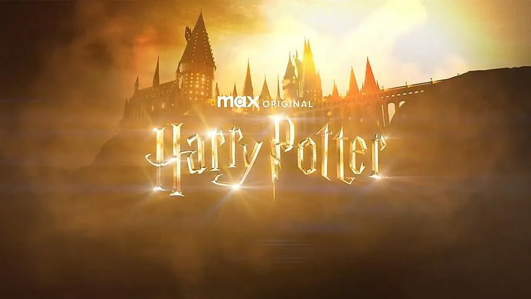
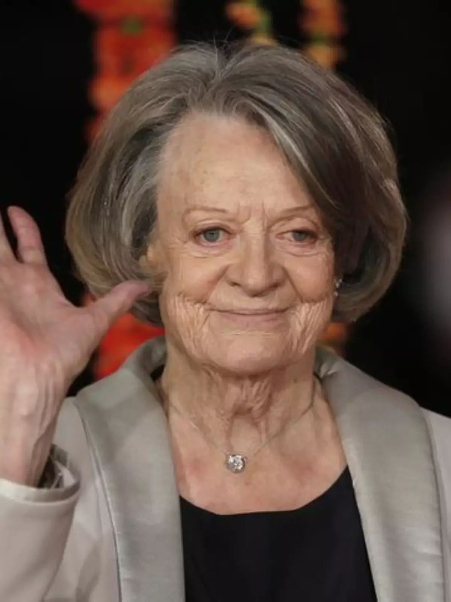

Hogwarts é uma escola de magia famosa que é o cenário da série de livros e filmes Harry Potter. A
escola está
localizada em algum lugar da Grã-Bretanha e é frequentada por jovens bruxos e bruxas que vêm de todo o mundo
mágico. Hogwarts é uma escola impressionante e imponente, com torres altas, janelas pontiagudas e um grande
pátio de pedra. A história da escola remonta a mais de mil anos, quando foi fundada por quatro bruxos
notáveis, Godric Gryffindor, Helga Hufflepuff, Rowena Ravenclaw e Salazar Slytherin. Esses quatro fundadores
criaram as quatro casas de Hogwarts, que são Grifinória, Lufa-Lufa, Corvinal e Sonserina. Hogwarts é famosa
por seus professores excepcionais, como Alvo Dumbledore, Minerva McGonagall e Severus Snape, e pelas
disciplinas mágicas que ensina, como poções, feitiços e defesa contra as artes das trevas. O ambiente mágico e
acolhedor de Hogwarts tornou-se um ícone cultural e continua a inspirar fãs em todo o mundo.
Casas
As quatro casas de Hogwarts são Grifinória, Lufa-Lufa, Corvinal e Sonserina, cada uma com suas próprias
características definidoras. Grifinória é conhecida por sua coragem, determinação e bravura, enquanto
Lufa-Lufa é caracterizada por sua lealdade, paciência e gentileza. Corvinal é conhecida por sua inteligência,
criatividade e perspicácia, enquanto Sonserina é conhecida por sua astúcia, ambição e determinação. Cada casa
tem sua própria sala comunal e um fundador notável, e os alunos da mesma casa geralmente compartilham um forte
senso de camaradagem e lealdade uns aos outros. O sistema de casas de Hogwarts é uma parte importante da
cultura da escola, e cada casa compete entre si em atividades como o Quadribol e a Copa das Casas. Os alunos
são selecionados para as casas pelo Chapéu Seletor, que "lê" a mente do aluno para determinar qual casa será a
melhor opção para ele. O sistema de casas é uma maneira importante de encorajar a união e o espírito de equipe
na escola, bem como fornecer uma forma de competição saudável e divertida.
Chapéu seletor
Hogwarts é conhecida por ser uma escola de magia e bruxaria extremamente renomada, e o processo de seleção do
Chapéu Seletor é um dos elementos mais icônicos da experiência dos alunos em Hogwarts. Este objeto mágico é
responsável por dividir os alunos nas quatro casas da escola: Grifinória, Sonserina, Corvinal e Lufa-Lufa.
Ao chegar à escola, todos os alunos são convidados a sentar-se em uma cadeira na frente do Chapéu Seletor, que
é um chapéu antigo e gasto, mas extraordinariamente inteligente. O Chapéu Seletor é capaz de "ler" a mente do
aluno que o está usando, e determinar a casa em que ele deve ser colocado, com base em suas características,
habilidades e aspirações.
A seleção pode ser um momento tenso para os alunos, que aguardam ansiosamente para saber em qual casa serão
colocados. Alguns podem ter certeza de que pertencem a uma determinada casa, enquanto outros podem estar menos
seguros sobre onde se encaixam melhor.
Professores e Disciplinas
Os professores de Hogwarts são uma parte essencial da experiência educacional dos alunos da escola de magia e
bruxaria mais famosa do mundo. Cada professor é responsável por ensinar uma disciplina diferente e trazer sua
própria personalidade e estilo de ensino para a sala de aula.
Um dos professores mais icônicos de Hogwarts é Alvo Dumbledore, o diretor da escola e um dos maiores bruxos da
história. Dumbledore é conhecido por sua sabedoria, bondade e habilidade em lidar com situações difíceis, e é
um mentor importante para Harry Potter e outros alunos de Hogwarts.
Outro professor notável é Minerva McGonagall, chefe da casa Grifinória e professora de Transfiguração.
McGonagall é uma bruxa habilidosa e rigorosa, mas também se preocupa profundamente com o bem-estar de seus
alunos.
Severo Snape, professor de Poções e chefe da casa Sonserina, é um personagem complexo que é inicialmente
retratado como um antagonista, mas que posteriormente se revela um herói improvável. Ele é um professor
desafiador e exigente, que muitas vezes é criticado por ser injusto com os alunos, mas que também tem um
coração gentil e uma história de vida dolorosa.
Outros professores notáveis incluem Horácio Slughorn, professor de Poções, Sibila Trelawney, professora de
Adivinhação, e Remo Lupin, professor de Defesa Contra as Artes das Trevas. Cada um desses professores traz sua
própria personalidade e estilo de ensino para a sala de aula, tornando a experiência educacional em Hogwarts
extremamente rica e diversa.
As disciplinas ensinadas em Hogwarts incluem uma ampla variedade de assuntos mágicos, como Defesa Contra as
Artes das Trevas, Transfiguração, Poções, Herbologia e Estudo das Runas Antigas. Cada disciplina é ensinada
por um professor altamente qualificado, que é capaz de ajudar os alunos a dominar as habilidades mágicas
necessárias para se tornarem bruxos e bruxas bem-sucedidos.
Criaturas mágicas
Hogwarts é uma escola de magia e bruxaria cheia de criaturas mágicas e terrenos encantados. Os alunos de
Hogwarts têm a oportunidade de explorar muitos desses locais e encontrar muitas criaturas mágicas durante sua
estadia na escola.
A Floresta Proibida é um dos terrenos mais conhecidos de Hogwarts. Localizada nos limites da escola, a
Floresta Proibida é um lugar escuro e perigoso, cheio de criaturas mágicas selvagens. Muitos alunos são
advertidos a nunca entrar na floresta sem a supervisão de um professor, mas muitos ainda se aventuram lá em
busca de aventuras.
Outro lugar fascinante em Hogwarts é o Lago Negro, um grande lago localizado nos terrenos da escola. O lago é
o lar de muitas criaturas mágicas, incluindo sereianas e o temido Calamar Gigante. Os alunos têm a
oportunidade de nadar no lago durante os dias quentes de verão, mas devem tomar cuidado para não se envolver
em nenhuma situação perigosa.
Hogwarts também tem uma variedade de criaturas mágicas residentes, incluindo as corujas utilizadas para enviar
correspondências, os elfos domésticos que trabalham na cozinha da escola, e os famosos hipogrifos que os
alunos têm a oportunidade de aprender sobre em sua primeira aula de Trato de Criaturas Mágicas.
O livro conta a história de Newt Scamander, um magizoólogo que viaja do Reino Unido para os
Estados
Unidos com uma mala de animais mágicos. Ao chegar em Nova York, ele se depara com um problema: alguns
animais fugiram da mala e estão soltos pela cidade. O livro é dividido em quatro partes, cada uma
contando uma história diferente sobre os animais mágicos.
"Animais Fantásticos e os Crimes de Grindelwald" é o segundo livro da série "Animais
Fantásticos" de J.K.
Rowling, que se passa décadas antes da história de Harry Potter. Newt Scamander é chamado para ajudar a
capturar o bruxo das trevas Gellert Grindelwald, que escapou da custódia e planeja algo muito maior do que
todos imaginavam. Com o destino do mundo bruxo em jogo, Newt precisa encontrar uma maneira de derrotar
Grindelwald e proteger as criaturas mágicas que ama. O livro apresenta novos personagens e explora o passado
de personagens já conhecidos pelos fãs de Harry Potter.
"Animais Fantásticos e os Segredos de Dumbledore" é o terceiro livro da série "Animais
Fantásticos" de J.K.
Rowling, que se passa décadas antes da história de Harry Potter. Newt Scamander é convocado por Dumbledore
para ajudar a resolver uma série de assassinatos inexplicáveis que podem estar ligados ao retorno de Gellert
Grindelwald. Enquanto investigam, Newt e seus amigos descobrem um segredo obscuro que pode mudar para sempre o
mundo bruxo. O livro apresenta novos personagens e explora ainda mais o passado de personagens já conhecidos
pelos fãs de Harry Potter.
"Harry Potter e a Pedra Filosofal" é o primeiro livro da série de sucesso de J.K. Rowling. A
história começa
com o órfão Harry Potter descobrindo que ele é um bruxo e sendo levado para a Escola de Magia e Bruxaria de
Hogwarts. Lá, Harry faz amizade com Ron Weasley e Hermione Granger, e juntos eles descobrem um mistério sobre
a Pedra Filosofal, um objeto mágico poderoso que está escondido em Hogwarts. Harry e seus amigos precisam
proteger a pedra de um bruxo das trevas que quer usá-la para se tornar imortal. Com aventuras emocionantes e
personagens inesquecíveis, o livro é uma história de amizade, coragem e magia que cativou milhões de leitores
em todo o mundo.
"Harry Potter e a Câmara Secreta" é o segundo livro da série de J.K. Rowling. Após um verão
desastroso com
seus tios Dursley, Harry volta para Hogwarts para seu segundo ano. Porém, algo estranho está acontecendo na
escola: alunos estão sendo petrificados e mensagens escritas com sangue aparecem nas paredes. Harry e seus
amigos descobrem que uma câmara secreta foi aberta e um monstro está aterrorizando a escola. Com a ajuda do
diário de Tom Riddle, um antigo aluno, Harry começa a investigar a história da câmara e descobre que o monstro
pode ser uma serpente gigante controlada pelo herdeiro de Salazar Slytherin. Com o tempo se esgotando, Harry
precisa enfrentar seus medos e salvar seus amigos antes que seja tarde demais. O livro é uma história
emocionante de mistério, amizade e coragem, que apresenta novos personagens e aprofunda a mitologia do mundo
mágico criado por Rowling.
"Harry Potter e o Prisioneiro de Azkaban" é o terceiro livro da série de J.K. Rowling. Neste
ano, Harry volta
para Hogwarts, mas a escola está em alerta máximo devido à fuga de Sirius Black, um perigoso prisioneiro de
Azkaban. À medida que Harry descobre a verdade sobre o passado de Sirius e seu vínculo com seus pais, ele se
vê envolvido em uma conspiração sombria que ameaça sua própria vida. Com a ajuda de seus amigos, Harry
enfrenta Dementadores, descobre o poder do Patrono e desvenda segredos que podem mudar tudo o que ele conhece.
O livro é repleto de ação, mistério e revelações surpreendentes.
"Harry Potter e o Cálice de Fogo" é o quarto livro da série de J.K. Rowling. Neste ano,
Hogwarts sediará o
Torneio Tribruxo, um evento mágico que reúne estudantes de três escolas de magia. Harry é inesperadamente
selecionado como o quarto campeão, o que o leva a enfrentar desafios perigosos e descobrir segredos sombrios.
Enquanto lida com o torneio, Harry também enfrenta os crescentes sinais de que o Lorde das Trevas está
retornando. O livro apresenta reviravoltas emocionantes, amizades testadas e prepara o caminho para o
confronto final entre Harry e Voldemort.
"Harry Potter e a Ordem da Fênix" é o quinto livro da série de J.K. Rowling. Neste ano, Harry
enfrenta
desafios ainda maiores. Ele descobre que o Ministério da Magia está negando o retorno de Voldemort e se
recusando a preparar a comunidade mágica para a guerra iminente. Determinado a combater as forças das trevas,
Harry se junta à Ordem da Fênix, um grupo secreto liderado por Dumbledore. Enquanto enfrenta a hostilidade do
Ministério e lida com conflitos pessoais, Harry também aprende sobre a misteriosa ligação entre ele e
Voldemort. O livro aborda temas de resistência, lealdade e a difícil jornada da adolescência.
"Harry Potter e o Enigma do Príncipe" é o sexto livro da série de J.K. Rowling. Conforme
Voldemort se
fortalece, Hogwarts se prepara para a batalha final. Harry recebe aulas particulares de Dumbledore, onde
aprende sobre o passado sombrio de Voldemort e a importância das Horcruxes. Enquanto isso, os relacionamentos
se complicam, segredos são revelados e a tragédia atinge Hogwarts. O livro explora os caminhos obscuros da
magia, o poder da amizade e a luta entre a luz e as trevas.
"Harry Potter e as Relíquias da Morte" é o sétimo e último livro da série de J.K. Rowling. Com
a guerra em
pleno andamento, Harry, Rony e Hermione embarcam em uma perigosa missão para encontrar e destruir as Horcruxes
de Voldemort. Enquanto enfrentam obstáculos mortais e sacrificam tudo pelo bem maior, eles descobrem a verdade
sobre as Relíquias da Morte e o poder do amor e da coragem. O livro culmina em um confronto épico entre Harry
e Voldemort, determinando o destino do mundo mágico.
"Harry Potter e a Criança Amaldiçoada" é uma peça de teatro de Jack Thorne, baseada em uma
história original
de J.K. Rowling, John Tiffany e Jack Thorne. A trama se passa 19 anos após os eventos de "Relíquias da Morte"
e segue Harry Potter adulto, agora casado e pai de três filhos. Enquanto lida com o legado do passado, Harry
enfrenta desafios familiares e descobre que o passado pode voltar para assombrar o presente. A peça aborda
temas de amizade, paternidade e o peso das expectativas. Embora seja uma peça teatral, também foi publicada em
formato de roteiro de livro.
"Animais Fantásticos e Onde Habitam" é um filme que se passa no universo mágico de Harry
Potter. A história
se passa em 1926, quando o excêntrico magizoologista Newt Scamander chega a Nova York com sua mala repleta de
criaturas mágicas. Porém, algumas dessas criaturas acabam escapando e causando problemas na cidade. Enquanto
tenta recapturá-las, Newt se envolve em uma trama perigosa que ameaça a comunidade bruxa e coloca em risco a
coexistência pacífica entre bruxos e trouxas. Com a ajuda de novos amigos, Newt enfrenta desafios e descobre
segredos sombrios enquanto busca proteger as criaturas que tanto ama.
Na sequência de "Animais Fantásticos e Onde Habitam", o bruxo das trevas Gellert Grindelwald
escapa da
custódia e começa a reunir seguidores para sua causa: elevar os bruxos de sangue puro para governar sobre
todas as criaturas não mágicas. Em um esforço para frustrar os planos de Grindelwald, o professor Alvo
Dumbledore recruta seu ex-aluno Newt Scamander. Enquanto o perigo aumenta, o amor e a lealdade são testados,
até mesmo entre os amigos e familiares mais verdadeiros, em um mundo bruxo cada vez mais dividido.
No terceiro filme da franquia "Animais Fantásticos", Newt Scamander e seus amigos retornam para
enfrentar
novos desafios em meio ao mundo bruxo. O bruxo das trevas Gellert Grindelwald está cada vez mais poderoso e
perigoso, e cabe a Newt e seus aliados descobrir os segredos sombrios que envolvem Dumbledore e lutar contra
as ameaças que se aproximam.
Harry Potter é um garoto órfão que vive infeliz com seus tios adotivos. Porém, aos 11 anos, ele
descobre ser
um bruxo e recebe um convite para estudar na Escola de Magia e Bruxaria de Hogwarts. Lá, ele faz novos amigos
e descobre segredos sobre o seu passado e o mundo da magia.
Segundo ano na Escola de Magia e Bruxaria de Hogwarts, Harry Potter descobre que a Câmara
Secreta foi aberta
e que algo terrível está ameaçando os estudantes. Junto com seus amigos Ron e Hermione, Harry precisa
desvendar o mistério por trás da Câmara Secreta e impedir que mais pessoas sejam prejudicadas.
No terceiro ano em Hogwarts, Harry Potter e seus amigos Ron e Hermione enfrentam um novo
desafio: um
assassino perigoso, Sirius Black, escapou da prisão de Azkaban e está em busca de Harry. Enquanto tentam
descobrir a verdade por trás dos acontecimentos, eles também aprendem sobre os Dementadores e o poder da
amizade.
No quarto ano em Hogwarts, Harry Potter é selecionado como um dos competidores do Torneio
Tribruxo, uma
competição perigosa entre as três grandes escolas de magia. Enquanto enfrenta desafios mortais, Harry também
descobre segredos sombrios sobre a história de Voldemort e o renascimento de seu poder.
No quinto ano em Hogwarts, Harry Potter enfrenta desafios e mudanças significativas. Ele lida
com a negação
do Ministério da Magia sobre o retorno de Lord Voldemort, enquanto se junta à Ordem da Fênix para lutar contra
as forças das trevas que ameaçam a segurança de todos.
No sexto ano em Hogwarts, Harry Potter descobre um livro antigo e misterioso, conhecido como "O
Enigma do
Príncipe", que contém segredos sobre poções e feitiços. Enquanto investiga o passado de Voldemort, Harry
enfrenta desafios pessoais e lida com os crescentes perigos que ameaçam o mundo bruxo.
"Harry Potter e as Relíquias da Morte - Parte 1" é o penúltimo capítulo da épica saga do bruxo
mais famoso do
mundo. Após a morte de Dumbledore, Harry, Ron e Hermione partem em uma perigosa missão para destruir as
horcruxes de Voldemort e impedir que o mal se espalhe pelo mundo dos bruxos. Em uma jornada repleta de perdas,
descobertas e traições, eles enfrentam o medo e a escuridão enquanto lutam para manter a esperança viva e
desvendar os segredos das relíquias da morte.
"Harry Potter e as Relíquias da Morte - Parte 2" marca o emocionante desfecho da aclamada série Harry Potter.
Enquanto a batalha final entre o bem e o mal se intensifica, Harry, Ron e Hermione se unem aos seus amigos e
aliados para enfrentar Voldemort e suas forças das trevas. Em Hogwarts, o trio enfrenta desafios mortais,
desvenda mistérios e se depara com sacrifícios heroicos. Nessa épica conclusão, segredos serão revelados,
laços serão testados e a coragem de Harry será posta à prova, levando-o a um confronto final que determinará o
destino do mundo bruxo.
"De Volta a Hogwarts" é um documentário fascinante que nos leva aos bastidores do icônico universo de Harry
Potter. Através de imagens exclusivas e entrevistas com o elenco original, acompanhamos a preparação e a
emocionante reunião dos atores para a peça teatral "Harry Potter e a Criança Amaldiçoada". Revivendo memórias
e explorando os desafios de retornar a personagens amados, o documentário proporciona uma visão íntima e
nostálgica da magia que permeou as telas e os palcos ao longo de uma geração, celebrando a duradoura
influência dessa incrível franquia.
Trailer:
Série

A Warner Bros. Discovery confirmou que lançará uma série de Harry Potter no novo streaming Max,
com J.K.
Rowling como produtora executiva. A série será baseada nos sete livros da saga e terá um novo elenco para
atrair uma nova geração de fãs. A produção está prevista para durar uma década e cada temporada será fiel aos
livros originais. O orçamento será semelhante ou maior do que Game of Thrones e House of the Dragon. A editora
Rocco está entusiasmada com a notícia e acredita que a nova produção atrairá milhões de crianças e jovens para
o universo mágico de Rowling. Enquanto aguardamos a série, a Rocco lançará um compêndio visual em outubro e
uma edição luxuosa de Harry Potter e o Prisioneiro de Azkaban em novembro. A saga de Harry Potter vendeu mais
de 600 milhões de cópias em todo o mundo e J.K. Rowling foi a autora mais vendida no segmento infantojuvenil
no país em 2022.
Trailer:
Atores Principais
Daniel Radcliffe
Harry Potter
Emma Watson
Hermione Granger
Rupert Grint
Ron Weasley
Richard Harris
Alvo Dumbledore
Michael Gam
Alvo Dumbledore
Ralph Fiennes
Lord Valdermort
Tom Felton
Draco Malfoy
Alan Rickman
Severus Snape

Maggie Smith
McGonagall
Eddie Redmayane
Newt Scamander
Katherine Waterston
Tina Goldstein
Alison Sudol
Queenie Goldstein
Dan Fogler
Jacob Kowalski
Mads Mikkelsen
Gellert Grindelwald
Johnny Depp
Newt Scamander
Jude Law
Albus Dumbledore
Ezra Miller
Credence Barebone
Zoë Kravitz
Leta Lestrange
Jogos
De 2001 a 2010, uma série de jogos foi lançada como adaptação dos filmes da saga Harry Potter.
Esses jogos
permitiram que os fãs explorassem o mundo mágico de Harry Potter, participando de aulas em Hogwarts,
enfrentando desafios e revivendo momentos-chave dos filmes. Cada jogo acompanhava a progressão dos
livros/filmes, apresentando elementos como exploração, quebra-cabeças, batalhas mágicas e interação com
personagens conhecidos. Os jogos ofereceram aos fãs a chance de mergulhar mais profundamente na história e
experimentar a magia de Harry Potter de uma forma interativa.
No entanto, agora vamos falar sobre alguns dos melhores jogos da saga Harry Potter atualmente disponíveis:
Hogwarts Legacy
Hogwarts Legacy é um RPG de ação imersivo e de mundo aberto ambientado no mundo introduzido pela
primeira vez nos livros de Harry Potter. Pela primeira vez, experimente Hogwarts em 1800. Seu personagem é um
estudante que detém a chave para um antigo segredo que ameaça destruir o mundo mágico. Agora você pode assumir o
controle da ação e estar no centro de sua própria aventura no mundo mágico. Seu legado é o que você faz dele.
Sua história em Hogwarts começa em Harry Potter: Hogwarts Mystery, sua própria aventura no Mundo
Mágico. Escolha sua história, aprenda feitiços mágicos e duele contra rivais em uma jornada mágica. Explore
salas nunca antes vistas do Castelo de Hogwarts e investigue mistérios antigos. Aprenda magia poderosa e
conhecimento com os professores Dumbledore, Snape e muito mais. Duele contra seus rivais e forme alianças com
novos amigos para ajudá-lo em suas aventuras. Como parte do selo Portkey Games da WBIE, este jogo móvel inovador
coloca você no centro de uma história totalmente nova no mundo mágico. Quando sua coragem for testada, que tipo
de bruxa ou bruxo você será? Um Grifinório heróico? Um astuto sonserino? Você decide! Afinal, esta é a sua
história de Hogwarts.
Resolva quebra-cabeças, desbloqueie feitiços e supere os desafios enquanto combina os momentos
mais icônicos dos filmes de Harry Potter, apresentando Harry, Ron, Hermione, Hagrid e mais de seus personagens
favoritos e criaturas mágicas. Aproveite a jogabilidade inovadora ao subir de nível e usar feitiços para "swish
and flick" neste jogo de quebra-cabeça mágico e caprichoso!
Sua jornada para dominar a magia começa aqui! Você está convidado a frequentar a Escola de Magia e Bruxaria de
Hogwarts. Duelo em emocionantes partidas multijogador em tempo real. Navegue pelas deslumbrantes lojas do Beco
Diagonal, resolva mistérios enquanto percorre os corredores da escola, jogue Quadribol, dance no Baile, explore
a Floresta Proibida e muito mais nesta nova coleção de cartas e RPG!
Disponível na China Continental, Hong Kong, Macau e Taiwan. Em breve globalmente.


.webp)


_11zon.webp)